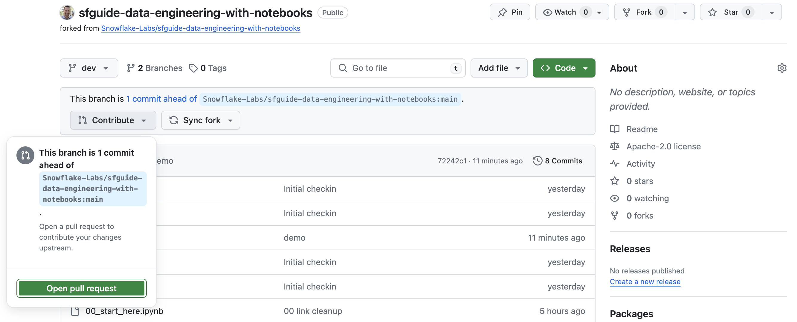

Notebooks are a very popular tool that are used to do everything from ad-hoc exploration of data to productionalized data engineering pipelines. While Notebooks can contain a mix of both Python and SQL, most of the time they're used for Python coding. In my previous Quickstart I detailed how to build Python data engineering pipelines in Snowflake using Visual Studio Code, from a lower-level developer perspective.
This Quickstart will focus on how to build Python data engineering pipelines using Snowflake native Notebooks! Additionally, it will provide all the details needed to manage and deploy those Notebooks through an automated CI/CD pipeline from development to production! Here's a quick visual overview of what we'll accomplish in this Quickstart:

What You'll Learn
- How to ingest custom file formats (like Excel) with Snowpark from an external stage (such as an S3 bucket) into a Snowflake table
- How to access data from Snowflake Marketplace and use it for your analysis
- How to use Snowflake Notebooks and the Snowpark DataFrame API to build data engineering pipelines
- How to add logging to your Python data engineering code and monitor from within Snowsight
- How to execute SQL scripts from your Git repository directly in Snowflake
- How to use open-source Python libraries from curated Snowflake Anaconda channel
- How to use the Snowflake Python Management API to programmatically work with Snowflake objects
- How to use the Python Task DAG API to programatically manage Snowflake Tasks
- How to build CI/CD pipelines using Snowflake's Git Integration, the Snowflake CLI, and GitHub Actions
- How to deploy Snowflake Notebooks from dev to production
What You'll Build
- A data share from the Snowflake Marketplace to access weather data
- A data engineering pipeline with a Notebook to ingest Excel files into Snowflake
- A data engineering pipeline with a Notebook to transform and aggreggate data
- A DAG (or Directed Acyclic Graph) of Tasks to orchestrate/schedule the pipelines
- A CI/CD pipeline to deploy the Notebooks to production
Prerequisites
- Familiarity with Python
- Familiarity with the DataFrame API
- Familiarity with Snowflake
- Familiarity with Git repositories and GitHub
What You'll Need
You will need the following things before beginning:
- Snowflake account
- A Snowflake Account. Visit the Snowflake Account Sign In page to log into your account or to sign up for a trial account.
- A Snowflake user created with ACCOUNTADMIN permissions. This user will be used to get things setup in Snowflake.
- Anaconda Terms & Conditions accepted. See Getting Started section in Third-Party Packages.
- GitHub account
- A GitHub account. If you don't already have a GitHub account you can create one for free. Visit the Join GitHub page to get started.
Create a GitHub Personal Access Token
In order for Snowflake to authenticate to your GitHub repository, you will need to generate a personal access token. Please follow the Creating a personal access token instructions to create your token.
Make sure to save the token before leaving the page, as we will be using it a couple of times during this Quickstart.
Fork the Quickstart Repository
You'll need to create a fork of the repository for this Quickstart in your GitHub account. Visit the Data Engineering with Snowflake Notebooks associated GitHub Repository and click on the "Fork" button near the top right. Complete any required fields and click "Create Fork".
Create the dev Branch
During this Quickstart we will do our development work in a dev branch of the repository. So let's create the dev branch in your forked repository now. To do that begin by clicking on the branch selector just above the list of files in the repository, type the word "dev" (all lowercase) into the "Find or create a branch..." box and then click on "Create branch dev from main" (see screenshot below).

Your new branch will be created and you will now be back on the repository code page with your dev branch selected (notice the value of the branch selector).
Configure GitHub Actions
By default GitHub Actions disables any workflows (or CI/CD pipelines) defined in the forked repository. This repository contains a workflow to deploy your Snowpark Notebooks, which we'll use later on. So for now enable this workflow by opening your forked repository in GitHub, clicking on the Actions tab near the top middle of the page, and then clicking on the I understand my workflows, go ahead and enable them green button.

The last step to enable your GitHub Actions workflow is to create the required secrets. In order for your GitHub Actions workflow to be able to connect to your Snowflake account you will need to store your Snowflake credentials in GitHub. Action Secrets in GitHub are used to securely store values/variables which will be used in your CI/CD pipelines. In this step we will create secrets for each of the parameters used by the Snowflake CLI.
From the repository, click on the "Settings" tab near the top of the page. From the Settings page, click on the Secrets and variables then Actions tab in the left hand navigation. The Actions secrets should be selected. For each secret listed below click on New repository secret near the top right and enter the name given below along with the appropriate value (adjusting as appropriate).
Secret name | Secret value |
SNOWFLAKE_ACCOUNT | myaccount |
SNOWFLAKE_USER | myusername |
SNOWFLAKE_PASSWORD | mypassword |
SNOWFLAKE_ROLE | DEMO_ROLE |
SNOWFLAKE_WAREHOUSE | DEMO_WH |
SNOWFLAKE_DATABASE | DEMO_DB |
SNOWFLAKE_SCHEMA | INTEGRATIONS |
When you're finished adding all the secrets, the page should look like this:

Since the focus of this Quickstart is on Notebooks, we're going to use a Notebook to set up our Snowflake demo environment.
Download the 00 Notebook
The Notebook we're going to use to set up our Snowflake demo environment can be found in your forked repository. From the GitHub web UI open the 00_start_here.ipynb file and then download the raw file (using one of the links near the top right of the page).
Import the 00 Notebook to Snowflake
Follow these steps to import the Notebook into your Snowflake account:
- Log into Snowsight
- Browse to "Notebooks" in the left navigation (under "Projects")
- Click on arrow next to the blue "+ Notebook" button on top right, then select "Import .ipynb file"
- Select the
00_start_here.ipynbfile you downloaded previously - Choose a database and schema for the notebook to live in and then a default warehouse for the notebook
- Click "Create"
Run the 00 Setup Notebook Cells
Before you can run the set up steps in the 00_start_here.ipynb Notebook you need to first add the snowflake package to it. To do that, follow these steps:
- Open the Notebook
- Click on the "Packages" drop down on the top menu bar, near the right
- Type "snowflake" in the "Find Packages" search box and select it from the drop down
Once you have all the required packages configured, click the "Start" button on the top menu bar, near the right. Once the Notebook session has started you're ready to run cells in the Notebook. And notice how quickly the session starts up, especially compared to starting a Spark cluster!
Scroll down to the "Step 03 Setup Snowflake" section. You'll want to run all the cells in this section. But before doing so make sure and update the 4 GITHUB_ SQL variables in the first sql_step03_set_context cell. Use the value of your GitHub personal access token in the GITHUB_SECRET_PASSWORD variable. Then run all the cells in this section. To run a given cell simply click anywhere in the cell to select it and press CMD/CTRL+Enter. You can alternatively click on the Run arrow near the top right of the cell.
During this step we will be deploying the dev versions of our two data engineering Notebooks: DEV_06_load_excel_files and DEV_07_load_daily_city_metrics. For this Quickstart you will notice that our main data engineering Notebooks will be named with a prefix for the environment label, like DEV_ for dev and PROD_ for prod. A full discussion of different approaches for managing multiple environments with Snowflake is out of scope for this Quickstart. For a real world use case, you may or may not need to do the same, depending on your Snowflake set up.
To put this in context, we are on step #4 in our data flow overview:
Git in Snowsight
When you ran the setup cells in the 00_start_here.ipynb Notebook in the previous step, you created a Git Integration in Snowflake for your forked GitHub repository! Please see Using a Git repository in Snowflake for more details.
You can browse your Git repository in Snowsight, by using our Snowsight Git integration features. To do that, click on "Data" -> "Databases" in the left navigation. Then click on "DEMO_DB" database, then "INTEGRATIONS" schema, then "Git Repositories" and finally "DEMO_GIT_REPO". You will see the details and content of your Git repository in Snowsight. You can change branches and browse the files in the repo by clicking on the folder names to drill down.
Deploy Notebooks
Scroll down to the "Step 04 Deploy to Dev" section of the 00_start_here.ipynb Notebook and run the Python cell there. This cell will deploy both the 06_load_excel_files and 07_load_daily_city_metrics Notebooks to our DEV_SCHEMA schema (and will prefix both workbook names with DEV_).
EXECUTE IMMEDIATE FROM with Jinja Templating
The EXECUTE IMMEDIATE FROM command is very powerful and allows you to run an entire SQL script directly from Snowflake. And you'll notice here that we executing a SQL script directly from the main branch of our Git repo (@DEMO_GIT_REPO/branches/main). At this point please review the contents of the scripts/deploy_notebooks.sql script in your forked repo to see what we just executed.
Also, please note that the scripts/deploy_notebooks.sql script also includes Jinja Templating. Jinja templating allows us to parameterize this script so we can run the same core logic in each environment! You will see later in step 9 that we will call this same script from our GitHub Actions pipeline in order to deploy these Notebooks to production.
During this step we will be "loading" the raw weather data to Snowflake. But "loading" is the really the wrong word here. Because we're using Snowflake's unique data sharing capability we don't actually need to copy the data to our Snowflake account with a custom ETL process. Instead we can directly access the weather data shared by Weather Source in the Snowflake Marketplace. To put this in context, we are on step #5 in our data flow overview:
Load Weather Data from Snowflake Marketplace
Weather Source is a leading provider of global weather and climate data and their OnPoint Product Suite provides businesses with the necessary weather and climate data to quickly generate meaningful and actionable insights for a wide range of use cases across industries. Let's connect to the Weather Source LLC: frostbyte feed from Weather Source in the Snowflake Marketplace by following these steps:
- Login to Snowsight
- Click on the
Marketplacelink in the left navigation bar - Enter "Weather Source LLC: frostbyte" in the search box and click return
- Click on the "Weather Source LLC: frostbyte" listing tile
- Click the blue "Get" button
- Expand the "Options" dialog
- Change the "Database name" to read "FROSTBYTE_WEATHERSOURCE" (all capital letters)
- Select the "DEMO_ROLE" role to have access to the new database
- Click on the blue "Get" button
That's it... we don't have to do anything from here to keep this data updated. The provider will do that for us and data sharing means we are always seeing whatever they have published. How amazing is that? Just think of all the things you didn't have do here to get access to an always up-to-date, third-party dataset!
During this step we will be loading data from two Excel files in S3 into the LOCATION and ORDER_DETAIL tables. To do this we'll take advantage of the Snowpark Python file access feature. For more details on this please see my related blog post Simplify data ingestion with Snowpark Python file access.
To put this in context, we are on step #6 in our data flow overview:
Run the Notebook
In step 3 we deployed development versions of our two data engineering notebooks, which are owned by the DEMO_ROLE role. So first switch roles in Snowsight to the DEMO_ROLE and then open the DEV_06_load_excel_files Notebook.
Once you've opened the DEV_06_load_excel_files Notebook click on the "Run all" button near the top right of the window. This will execute all cells in the notebook, in order.
Notebook Git Integration
You will notice that to the left of the main Notebook area there is a sidebar which shows the files that make up the Notebook. And since we created this Notebook from our Git repository you will also notice the Git related identifiers. From the sidebar you can see which branch the Notebook is working from along with the ability to pull changes from the repo. So here is even more Git integration built directly in Snowsight. Here's a screenshot:

Notebook Cell References
You'll notice in the Notebook examples that we can pass values between cells. So for example, in the sql_get_context cell we have:
SELECT current_database() AS DATABASE_NAME, current_schema() AS SCHEMA_NAME
And then later in the py_imports cell you'll find the following code:
current_context_df = cells.sql_get_context.to_pandas()
database_name = current_context_df.iloc[0,0]
schema_name = current_context_df.iloc[0,1]
So we're able to take the results of a SQL query and use them in Python! And this works the other direction as well, accessing Python values in SQL. For more details please see Reference cells and variables in Snowflake Notebooks in our documentation.
Dynamic File Access
Like I mentioned at the beginning of this section, we're able to read on process Excel files with the Snowpark Python file access feature. And this same principle applies to more than just Excel files, you can use it to process any file format you'd like. For more details on this please see my related blog post Simplify data ingestion with Snowpark Python file access.
During this step we will be joining data from our LOCATION and ORDER_DETAIL tables (from the previous step) with the weather data we set up in step 5 to produce an aggregated reporting table DAILY_CITY_METRICS. We'll leverage the Snowpark DataFrame API to perform the data transformations, and will also show how to incorporate logging into your code. To put this in context, we are on step #7 in our data flow overview:
Run the Notebook
In step 3 we deployed development versions of our two data engineering notebooks, which are owned by the DEMO_ROLE role. So first switch roles in Snowsight to the DEMO_ROLE and then open the DEV_07_load_daily_city_metrics Notebook. If you already switched roles in the previous step you can simply close the previous Notebook and open this one.
Once you've opened the DEV_07_load_daily_city_metrics Notebook click on the "Run all" button near the top right of the window. This will execute all cells in the notebook, in order.
Snowpark DataFrame API
In this step we're starting to really use the Snowpark DataFrame API for data transformations. The Snowpark API provides the same functionality as the Spark SQL API. To begin with you need to create a Snowpark session object. Like in PySpark, this can be accomplished with the Session.builder.configs().create() methods. But within a Snowflake Notebook this is simplified and can be accomplished with just session = get_active_session().
One you have a Snowpark session you can begin working with data. In this Notebook we're using DataFrames to join the data from different tables into an order_detail DataFrame using the join() API.
order_detail = order_detail.join(location, order_detail['LOCATION_ID'] == location['LOCATION_ID'])
order_detail = order_detail.join(history_day, (F.builtin("DATE")(order_detail['ORDER_TS']) == history_day['DATE_VALID_STD']) & (location['ISO_COUNTRY_CODE'] == history_day['COUNTRY']) & (location['CITY'] == history_day['CITY_NAME']))
After that we're then aggregating the DataFrame using APIs such as agg(), group_by(), and select().
final_agg = order_detail.group_by(F.col('DATE_VALID_STD'), F.col('CITY_NAME'), F.col('ISO_COUNTRY_CODE')) \
.agg( \
F.sum('PRICE').alias('DAILY_SALES_SUM'), \
F.avg('AVG_TEMPERATURE_AIR_2M_F').alias("AVG_TEMPERATURE_F"), \
F.avg("TOT_PRECIPITATION_IN").alias("AVG_PRECIPITATION_IN"), \
) \
.select(F.col("DATE_VALID_STD").alias("DATE"), F.col("CITY_NAME"), F.col("ISO_COUNTRY_CODE").alias("COUNTRY_DESC"), \
F.builtin("ZEROIFNULL")(F.col("DAILY_SALES_SUM")).alias("DAILY_SALES"), \
F.round(F.col("AVG_TEMPERATURE_F"), 2).alias("AVG_TEMPERATURE_FAHRENHEIT"), \
F.round(F.col("AVG_PRECIPITATION_IN"), 2).alias("AVG_PRECIPITATION_INCHES"), \
)
And finally if the target table exists we're using the merge() DataFrame API to perform and Upsert operation on the target table. This is what enables us to perform incremental processing.
dcm.merge(final_agg, (dcm['DATE'] == final_agg['DATE']) & (dcm['CITY_NAME'] == final_agg['CITY_NAME']) & (dcm['COUNTRY_DESC'] == final_agg['COUNTRY_DESC']), \
[F.when_matched().update(cols_to_update), F.when_not_matched().insert(cols_to_update)])
For more details about the Snowpark Python DataFrame API, please check out our Working with Dataframe in Snowpark Python page.
Python Management API
The new Python Management API allows us to programmatically interact with Snowflake with native Python objects. This API can be used to both inspect and manage Snowflake objects. In the previous Quickstart we checked for the existing of an object by using SQL like this:
def table_exists(session, database_name='', schema_name='', table_name=''):
exists = session.sql("SELECT EXISTS (SELECT * FROM {}.INFORMATION_SCHEMA.TABLES WHERE TABLE_SCHEMA = '{}' AND TABLE_NAME = '{}') AS TABLE_EXISTS".format(database_name, schema_name, table_name)).collect()[0]['TABLE_EXISTS']
return exists
But with the Python Management API this can now be done with native Python objects like this:
def table_exists(session, database_name='', schema_name='', table_name=''):
root = Root(session)
tables = root.databases[database_name].schemas[schema_name].tables.iter(like=table_name)
for table_obj in tables:
if table_obj.name == table_name:
return True
return False
And this is really just the beginning of what you can do with this new library. Please check out the Snowflake Python Management API documentation for more details.
Logging in Python
A key aspect of building robust data engineering pipelines involves instrumenting our code. This enables the monitoring and operations of our code, and is especially important when automating the deployment and monitoring of our pipelines with DevOps. Snowflake has a rich set of Logging and Tracing capabilities to help.
You'll notice that in the py_imports cell of this Notebook we're using Snowflake's logging capabilities. There are two steps to do so in your code. The first is to create a logger to use:
logger = logging.getLogger("demo_logger")
And the second is to actually log debugging and informational messages at the appropriate places in your code:
logger.info("07_load_daily_city_metrics start")
In addition to custom logging, Snowflake is instrumenting all services/features to take advantage of logging and tracing as well. For example, when you ran this Notebook earlier it logged a number of messages by default, like when each cell executed.
All of your log messages can be found in your default logging table, which we created in step 3. If you look back at the code from step 3 you'll find that we created an event table named DEMO_DB.INTEGRATIONS.DEMO_EVENTS and then set that as the default event table for the account. You can now use this table just like any other table in Snowflake to query and act on the log data.
During this step we will be orchestrating our new Snowpark Notebook pipelines with Snowflake's native orchestration feature named Tasks. You can create and deploy Snowflake Task objects using SQL as well as with our Python Task APIs. For this Quickstart, we will use Snowflake Python Task APIs to create the Tasks. We will create two tasks, one for each Notebook, and chain them together. To put this in context, we are on step #8 in our data flow overview:
Deploy Task DAG
Toggle back to the 00_start_here Notebook, scroll down to the "Step 08 Orchestrate Pipelines" section, and run each of the cells.
Python Task DAG API
In this step we will create a DAG (or Directed Acyclic Graph) of Tasks using the new Snowflake Python Management API. The Task DAG API builds upon the Python Management API to provide advanced Task management capabilities. And if you've used Airflow before, this Python API should look familiar as it's similar to the Airflow v1 Python API. For more details see Managing Snowflake tasks and task graphs with Python.
Here is the key part of the code:
# Define the DAG
with DAG(dag_name, schedule=timedelta(days=1), warehouse=warehouse_name) as dag:
dag_task1 = DAGTask("LOAD_EXCEL_FILES_TASK", definition=f'''EXECUTE NOTEBOOK "{database_name}"."{schema_name}"."{env}_06_load_excel_files"()''', warehouse=warehouse_name)
dag_task2 = DAGTask("LOAD_DAILY_CITY_METRICS", definition=f'''EXECUTE NOTEBOOK "{database_name}"."{schema_name}"."{env}_07_load_daily_city_metrics"()''', warehouse=warehouse_name)
# Define the dependencies between the tasks
dag_task1 >> dag_task2 # dag_task1 is a predecessor of dag_task2
# Create the DAG in Snowflake
dag_op.deploy(dag, mode="orreplace")
You can see that we're defining two tasks, one for each Notebook, and that each task simply calls EXECUTE NOTEBOOK for the corresponding Notebook. We then define the dependencies and deploy the DAG. As you can see this makes managing complex Task DAGs much easier!
This code is also available in the scripts/deploy_task_dag.py script which could be used to automate the Task DAG deployment further.
Task Viewer in Snowsight
Now, after your DAG is deployed, all the tasks in your DAG will be running as per the defined schedule. However, as a Snowflake user, how can you peek into the success and failure of each run, look at the task run time, and more?
Snowflake provides some rich task observability features in the Snowsight UI. Try it out for yourself by following these steps:
- In the Snowsight navigation menu, click Data » Databases.
- In the right pane, using the object explorer, navigate to the
DEMO_DBdatabase andDEV_SCHEMAschema. - For the selected schema, select and expand Tasks.
- Select a task. Task information is displayed, including Task Details, Graph, and Run History sub-tabs.
- Select the Graph tab. The task graph appears, displaying a hierarchy of child tasks.
- Select a task to view its details.
Here's what the task graph looks like:

And here's an example of the task run history:

For more details, and to learn about viewing account level task history, please check out our Viewing Task History documentation.
Executing the DAG
The easiest way to manually kick off the Task DAG execution is to open up the root DEMO_DAG task, click on the "Graph" tab and then click on the "Run Task Graph" play button above the diagram. If not already set, you may have to pick a warehouse to use.
Task Metadata
Snowflake keeps metadata for almost everything you do, and makes that metadata available for you to query (and to create any type of process around). Tasks are no different, Snowflake maintains rich metadata to help you monitor your task runs. Here are a few sample SQL queries you can use to monitor your tasks runs:
-- Get a list of tasks
SHOW TASKS;
-- Task execution history in the past day
SELECT *
FROM TABLE(INFORMATION_SCHEMA.TASK_HISTORY(
SCHEDULED_TIME_RANGE_START=>DATEADD('DAY',-1,CURRENT_TIMESTAMP()),
RESULT_LIMIT => 100))
ORDER BY SCHEDULED_TIME DESC
;
-- Scheduled task runs
SELECT
TIMESTAMPDIFF(SECOND, CURRENT_TIMESTAMP, SCHEDULED_TIME) NEXT_RUN,
SCHEDULED_TIME,
NAME,
STATE
FROM TABLE(INFORMATION_SCHEMA.TASK_HISTORY())
WHERE STATE = 'SCHEDULED'
ORDER BY COMPLETED_TIME DESC;
During this step we will be deploying our Notebooks to production using a CI/CD pipeline. We will make a small change to a Notebook and then commit that change to our Git repo all within Snowsight. After that we will create a Pull Request (or PR), merge our changes to main and deploy with GitHub Actions. To put this in context, we are on step #9 in our data flow overview:
Update the 06 Notebook
Let's make a change to the DEV_06_load_excel_files Notebook and commit it to our forked repository. So begin by opening the DEV_06_load_excel_files Notebook. For this Quickstart we will make a trivial change just so we can see how the overall process works. So scroll down to the bottom to the sql_debugging cell and uncomment the final line, like this:
--DESCRIBE TABLE LOCATION;
--SELECT * FROM LOCATION;
SHOW TABLES;
In the left sidebar you will now see a small yellow "M" next to the .ipynb Notebook file indicating that you've modified it. To commit this change to the dev branch click on the "Commit" button near the top right of the window. In the "Commit to Repository" dialog you will see the list of modified files (one in this case) along with other details. Enter a basic commit message and then enter your "Personal access token" in the related Credentials field (the same one you created in step 2). Once finished click on the "Commit" button at the bottom.
Once that completes you will have committed your first change to your forked Git repository.
Create PR and Merge to Main
In order to create the Pull Request (PR) and merge our changes to the main branch we will need to use the GitHub UI. So toggle back over to your GitHub repository and open up the main repository code page by clicking on the "<> Code" tab near the top of the page. In order to create the PR you will need to switch to the dev branch. To do this, simply click on the branch selector just above the list of files in the repository and click on the dev branch.
Next click on the "Contribute" button just below the branch selector and click on the green "Open pull request" button (see screenshot below).

Important: By default GitHub will compare the dev branch in your forked repository with the main branch in the official Quickstart repository. You must change this. To change it click on the drop down that says "base repository" and change it to your forked repository. It should start with your GitHub username, not with "Snowflake-Labs" (see screenshot below).

Once you change it the "Comparing changes" box should look like this:

Finally enter a simple title and description, and then scroll down to verify that the change you made appears correctly. Then click on the green "Create pull request" button. You will be taken to the PR page.
To merge the PR all you need to do is click on the green "Merge pull request" button and then click on the green "Confirm merge" button that appears. You will see a message saying "Pull request successfully merged and closed". At this point the changes have been merged to the main branch, the PR has been closed, and the GitHub Actions CI/CD pipeline has been initiated.
GitHub Action Pipeline
This repository is already set up with a very simple GitHub Actions CI/CD pipeline. You can review the code for the workflow by opening the .github/workflows/deploy_demo_objects.yaml file in the GitHub repo file explorer.
As soon as you pushed the changes to your GitHub forked repo the workflow kicked off. To view the results go back to the homepage for your GitHub repository and do the following:
- From the repository, click on the
Actionstab near the top middle of the page - In the left navigation bar click on the name of the workflow
Deploy Demo Objects - Click on the name of most recent specific run (which should match the comment you entered)
- From the run overview page click on the
deployjob and then browse through the output from the various steps. In particular you might want to review the output from theDeploy Notebooksstep.

GitHub Actions Workflow
So what exactly happened when the GitHub Actions CI/CD pipeline ran. Let's take a quick look at the .github/workflows/deploy_demo_objects.yaml workflow definition to see. Here is the core part:
snow sql -q "ALTER GIT REPOSITORY DEMO_GIT_REPO FETCH" --temporary-connection --account $SNOWFLAKE_ACCOUNT --user $SNOWFLAKE_USER --role $SNOWFLAKE_ROLE --warehouse $SNOWFLAKE_WAREHOUSE --database $SNOWFLAKE_DATABASE --schema $SNOWFLAKE_SCHEMA
snow sql -q "EXECUTE IMMEDIATE FROM @DEMO_GIT_REPO/branches/main/scripts/deploy_notebooks.sql USING (env => 'PROD', branch => 'main')" --temporary-connection --account $SNOWFLAKE_ACCOUNT --user $SNOWFLAKE_USER --role $SNOWFLAKE_ROLE --warehouse $SNOWFLAKE_WAREHOUSE --database $SNOWFLAKE_DATABASE --schema $SNOWFLAKE_SCHEMA
We're running two commands for the deployment, and both are calling the Snowflake CLI to help us run the appropriate SQL commands. In the first command we are running an ALTER GIT REPOSITORY ... FETCH command to make sure our Git Repository in Snowflake is up to date. And in the second command we are calling the same EXECUTE IMMEDIATE FROM command that we ran in the 00_start_here Notebook in step 4 to deploy the dev versions of the Notebooks. You'll notice that the only difference is this time we're passing different parameters to the script, to match our production environment: USING (env => 'PROD', branch => 'main'). But pretty cool that we can use the same command from a Notebook interactively or from the Snowflake CLI via a CI/CD pipeline!
Snowflake CLI
As discussed above we're leveraging the Snowflake CLI in our CI/CD pipeline to help with the deployment. The Snowflake CLI is an open-source command-line tool explicitly designed for developer-centric workloads in addition to SQL operations.
In addition to running SQL commands and scripts, the Snowflake CLI allows developers to create, manage, update, and view Snowflake apps such as:
- Snowpark UDFs and Sprocs
- Streamlit in Snowflake
- Snowflake Native Apps
- Snowpark Container Services
Executing the Production DAG
This step is optional, but if you want to actually run the production version of your Notebooks you simply need to deploy the production version of your Task DAG and then execute it.
Toggle back to the 00_start_here Notebook and scroll back to the "Step 08 Orchestrate Pipelines" section. In the py_step08_set_env cell change the schema_name variable to "PROD_SCHEMA". Then re-run all the cells in this section to deploy the production version of the Task DAG.
Finally, to execute the production version of the Task DAG, follow the steps we did in step 8.
- In the Snowsight navigation menu, click Data » Databases.
- In the right pane, using the object explorer, navigate to the
DEMO_DBdatabase andPROD_SCHEMAschema. - For the selected schema, select and expand Tasks.
- Select the root
DEMO_DAGtask. - Select the Graph tab.
- Click on the "Run Task Graph" play button above the diagram (and if not already set, you may have to pick a warehouse to use).
Once you're finished with the Quickstart and want to clean things up, toggle back to the 00_start_here Notebook and scroll down to the "Step 10 Teardown" section. Then just run the SQL commands in the sql_step10 cell to remove all the objects created during the Quickstart.
Finally, you can delete the 00_start_here Notebook. With the Notebook open click on the ":" button near the top right of the window and click on "Delete".
Congratulations! You have now built end-to-end data engineering pipelines with Notebooks in Snowflake. You've also seen how to follow a complete Software Development Life Cycle (SDLC) for data engineering with Notebooks, including integration with Git, deploying to multiple environments through a CI/CD pipeline, instrumenting your code for monitoring and debugging, and orchestrating the pipelines with Task DAGs. Here's a quick visual recap:
Hopefully you now have the building blocks, and examples, you need to get started building your own data engineering pipelines with Notebooks. So, what will you build now?
What You Learned
- How to ingest custom file formats (like Excel) with Snowpark from an external stage (such as an S3 bucket) into a Snowflake table
- How to access data from Snowflake Marketplace and use it for your analysis
- How to use Snowflake Notebooks and the Snowpark DataFrame API to build data engineering pipelines
- How to add logging to your Python data engineering code and monitor from within Snowsight
- How to execute SQL scripts from your Git repository directly in Snowflake
- How to use open-source Python libraries from curated Snowflake Anaconda channel
- How to use the Snowflake Python Management API to programmatically work with Snowflake objects
- How to use the Python Task DAG API to programatically manage Snowflake Tasks
- How to build CI/CD pipelines using Snowflake's Git Integration, the Snowflake CLI, and GitHub Actions
- How to deploy Snowflake Notebooks from dev to production